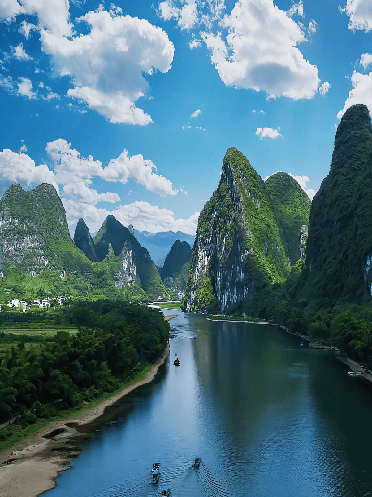

DAY
01
01
抵达桂林 · 初见山水
抵达后办理入住，傍晚漫步东西巷，感受桂林的城市气息。
城市探索 · 休整A 7-DAY JOURNEY
以桂林与阳朔为目的地，安排一趟有自然、有美食，也有留白时间的旅行。

TRIP OVERVIEW
建议季节：春季、秋季
旅行节奏：轻松 · 自然 · 人文
适合人群：朋友结伴、家庭出游、摄影爱好者
DAY BY DAY
抵达后办理入住，傍晚漫步东西巷，感受桂林的城市气息。
城市探索 · 休整乘船欣赏沿岸峰林与江景，预留时间拍照，晚上品尝当地米粉。
自然风光 · 摄影前往阳朔，下午自由探索街巷，晚上体验当地夜生活。
城市漫步 · 美食沿遇龙河骑行，经过村庄、稻田与小桥，享受悠闲的一天。
户外活动 · 慢旅行沿十里画廊游览，选择感兴趣的观景点，不必把每个景点都排满。
自然风光 · 自由探索睡到自然醒，可以体验当地手作、咖啡馆，或再次寻找喜欢的江边风景。
自由活动 · 放松购买伴手礼，检查随身物品，预留充足时间前往车站或机场。
返程 · 旅程结束以上为示例路线。实际出行前，请根据交通班次、天气、景区开放时间和个人体力调整安排。